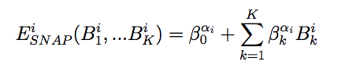

pair_style snap command¶
Syntax¶
pair_style snap
Examples¶
pair_style snap
pair_coeff * * snap InP.snapcoeff In P InP.snapparam In In P P
Description¶
Style snap computes interactions using the spectral neighbor analysis potential (SNAP) (Thompson). Like the GAP framework of Bartok et al. (Bartok2010), (Bartok2013) it uses bispectrum components to characterize the local neighborhood of each atom in a very general way. The mathematical definition of the bispectrum calculation used by SNAP is identical to that used of compute sna/atom. In SNAP, the total energy is decomposed into a sum over atom energies. The energy of atom i is expressed as a weighted sum over bispectrum components.
where B_k^i is the k-th bispectrum component of atom i, and beta_k^alpha_i is the corresponding linear coefficient that depends on alpha_i, the SNAP element of atom i. The number of bispectrum components used and their definitions depend on the values of twojmax and diagonalstyle defined in the SNAP parameter file described below. The bispectrum calculation is described in more detail in compute sna/atom.
Note that unlike for other potentials, cutoffs for SNAP potentials are not set in the pair_style or pair_coeff command; they are specified in the SNAP potential files themselves.
Only a single pair_coeff command is used with the snap style which specifies two SNAP files and the list SNAP element(s) to be extracted. The SNAP elements are mapped to LAMMPS atom types by specifying N additional arguments after the 2nd filename in the pair_coeff command, where N is the number of LAMMPS atom types:
- SNAP element file
- Elem1, Elem2, ...
- SNAP parameter file
- N element names = mapping of SNAP elements to atom types
As an example, if a LAMMPS indium phosphide simulation has 4 atoms types, with the first two being indium and the 3rd and 4th being phophorous, the pair_coeff command would look like this:
pair_coeff * * snap InP.snapcoeff In P InP.snapparam In In P P
The 1st 2 arguments must be * * so as to span all LAMMPS atom types. The two filenames are for the element and parameter files, respectively. The ‘In’ and ‘P’ arguments (between the file names) are the two elements which will be extracted from the element file. The two trailing ‘In’ arguments map LAMMPS atom types 1 and 2 to the SNAP ‘In’ element. The two trailing ‘P’ arguments map LAMMPS atom types 3 and 4 to the SNAP ‘P’ element.
If a SNAP mapping value is specified as NULL, the mapping is not performed. This can be used when a snap potential is used as part of the hybrid pair style. The NULL values are placeholders for atom types that will be used with other potentials.
The name of the SNAP element file usually ends in the ”.snapcoeff” extension. It may contain coefficients for many SNAP elements. Only those elements listed in the pair_coeff command are extracted. The name of the SNAP parameter file usually ends in the ”.snapparam” extension. It contains a small number of parameters that define the overall form of the SNAP potential. See the pair_coeff doc page for alternate ways to specify the path for these files.
Quite commonly, SNAP potentials are combined with one or more other LAMMPS pair styles using the hybrid/overlay pair style. As an example, the SNAP tantalum potential provided in the LAMMPS potentials directory combines the snap and zbl pair styles. It is invoked by the following commands:
variable zblcutinner equal 4
variable zblcutouter equal 4.8
variable zblz equal 73
pair_style hybrid/overlay &
zbl ${zblcutinner} ${zblcutouter} snap
pair_coeff * * zbl 0.0
pair_coeff 1 1 zbl ${zblz}
pair_coeff * * snap ../potentials/Ta06A.snapcoeff Ta &
../potentials/Ta06A.snapparam Ta
It is convenient to keep these commands in a separate file that can be inserted in any LAMMPS input script using the include command.
The top of the SNAP element file can contain any number of blank and comment lines (start with #), but follows a strict format after that. The first non-blank non-comment line must contain two integers:
- nelem = Number of elements
- ncoeff = Number of coefficients
This is followed by one block for each of the nelem elements. The first line of each block contains three entries:
- Element symbol (text string)
- R = Element radius (distance units)
- w = Element weight (dimensionless)
This line is followed by ncoeff coefficients, one per line.
The SNAP parameter file can contain blank and comment lines (start with #) anywhere. Each non-blank non-comment line must contain one keyword/value pair. The required keywords are rcutfac and twojmax. Optional keywords are rfac0, rmin0, diagonalstyle, and switchflag.
The default values for these keywords are
- rfac0 = 0.99363
- rmin0 = 0.0
- diagonalstyle = 3
- switchflag = 0
Detailed definitions of these keywords are given on the compute sna/atom doc page.
Mixing, shift, table, tail correction, restart, rRESPA info:
For atom type pairs I,J and I != J, where types I and J correspond to two different element types, mixing is performed by LAMMPS with user-specifiable parameters as described above. You never need to specify a pair_coeff command with I != J arguments for this style.
This pair style does not support the pair_modify shift, table, and tail options.
This pair style does not write its information to binary restart files, since it is stored in potential files. Thus, you need to re-specify the pair_style and pair_coeff commands in an input script that reads a restart file.
This pair style can only be used via the pair keyword of the run_style respa command. It does not support the inner, middle, outer keywords.
Restrictions¶
This style is part of the SNAP package. It is only enabled if LAMMPS was built with that package. See the Making LAMMPS section for more info.